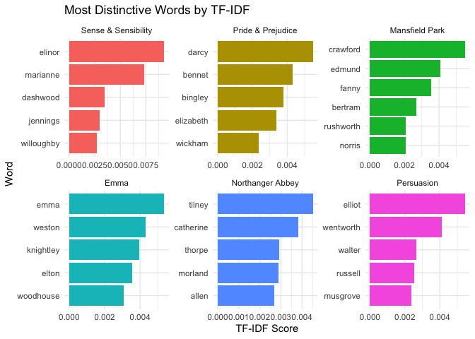

Computational Research
Dr. Ayse D. Lokmanoglu Lecture 4, (B) Feb 11, (A) Feb 17
Lecture 4 Table of Contents
| Section | Topic |
|---|---|
| 1 | Control Structures |
| 1.1 | if-else Statements |
| 1.2 | for Loops |
| 1.3 | Looping Over Vectors |
| 1.4 | Nested Loops |
| 1.5 | while Loops |
| 1.6 | break and next |
| 2 | Functions |
| 2.1 | Why Write Functions? |
| 2.2 | Creating Your First Function |
| 2.3 | Function Arguments |
| 2.4 | Default Arguments |
| 2.5 | Return Values |
| 2.6 | Argument Matching |
| 3 | Text Analysis with TidyText |
| 3.1 | Introduction to TidyText |
| 3.2 | Tokenizing Text with unnest_tokens() |
| 3.3 | Removing Stopwords |
| 4 | Keyword in Context (KWIC) |
| 4.1 | What is KWIC? |
| 4.2 | Extracting Keywords |
| 4.3 | Extracting Surrounding Context |
| 5 | Document-Term Matrix (DTM) |
| 5.1 | What is a DTM? |
| 5.2 | From Text to DTM: The Pipeline |
| 5.3 | Creating the DTM |
| 5.4 | Visualizing the DTM as a Heatmap |
| 5.5 | Visualizing Top Words per Document |
| 5.6 | Converting DTM Back to Tidy Format |
| 6 | TF-IDF |
| 6.1 | Understanding TF-IDF |
| 6.2 | Calculating TF-IDF |
| 6.3 | Visualizing TF-IDF |
| 7 | Word Clouds |
| 7.1 | Creating Word Clouds |
| 7.2 | Customizing Word Clouds |
ALWAYS load our libraries first
library(tidyverse)
library(dplyr)
library(stringr)
library(tidytext)
library(ggplot2)1. Control Structures
Control structures allow you to control the flow of execution in your R code. Instead of running the same code every time, you can add logic to respond to different inputs or data conditions.
Common control structures include:
| Structure | Purpose |
|---|---|
if, else |
Test a condition and act on it |
for |
Execute a loop a fixed number of times |
while |
Execute a loop while a condition is true |
break |
Exit a loop immediately |
next |
Skip to the next iteration of a loop |
1.1 if-else Statements
The if-else combination tests a condition and executes different code depending on whether it’s TRUE or FALSE.
Basic if statement:
x <- 7
if (x > 5) {
print("x is greater than 5")
}## [1] "x is greater than 5"if-else statement:
x <- 3
if (x > 5) {
print("x is greater than 5")
} else {
print("x is NOT greater than 5")
}## [1] "x is NOT greater than 5"Multiple conditions with else if:
x <- 5
if (x > 5) {
print("x is greater than 5")
} else if (x == 5) {
print("x is exactly 5")
} else {
print("x is less than 5")
}## [1] "x is exactly 5"Compact if-else (single line):
x <- 8
y <- if (x > 5) "big" else "small"
print(y)## [1] "big"1.2 for Loops
for loops iterate over elements in a sequence (vector, list, etc.) and execute code for each element.
Basic for loop:
for (i in 1:5) {
print(i)
}## [1] 1
## [1] 2
## [1] 3
## [1] 4
## [1] 5Looping over a character vector:
fruits <- c("apple", "banana", "cherry")
for (fruit in fruits) {
print(paste("I like", fruit))
}## [1] "I like apple"
## [1] "I like banana"
## [1] "I like cherry"1.3 Looping Over Vectors
There are multiple ways to loop over vectors. The seq_along() function is particularly useful:
colors <- c("red", "green", "blue", "yellow")
# Method 1: Loop over indices
for (i in 1:length(colors)) {
print(paste("Color", i, "is", colors[i]))
}## [1] "Color 1 is red"
## [1] "Color 2 is green"
## [1] "Color 3 is blue"
## [1] "Color 4 is yellow"# Method 2: Using seq_along() - safer!
for (i in seq_along(colors)) {
print(paste("Color", i, "is", colors[i]))
}## [1] "Color 1 is red"
## [1] "Color 2 is green"
## [1] "Color 3 is blue"
## [1] "Color 4 is yellow"# Method 3: Loop directly over elements
for (color in colors) {
print(color)
}## [1] "red"
## [1] "green"
## [1] "blue"
## [1] "yellow"Why use seq_along()? It’s safer because if the vector is empty, 1:length(x) would give 1:0 which creates c(1, 0), but seq_along(x) correctly returns an empty sequence.
1.4 Nested Loops
Loops can be nested inside each other. This is useful for working with matrices or multidimensional data:
# Create a 3x3 matrix
mat <- matrix(1:9, nrow = 3, ncol = 3)
print(mat)## [,1] [,2] [,3]
## [1,] 1 4 7
## [2,] 2 5 8
## [3,] 3 6 9# Loop through rows and columns
for (i in 1:nrow(mat)) {
for (j in 1:ncol(mat)) {
print(paste("Row", i, "Col", j, "=", mat[i, j]))
}
}## [1] "Row 1 Col 1 = 1"
## [1] "Row 1 Col 2 = 4"
## [1] "Row 1 Col 3 = 7"
## [1] "Row 2 Col 1 = 2"
## [1] "Row 2 Col 2 = 5"
## [1] "Row 2 Col 3 = 8"
## [1] "Row 3 Col 1 = 3"
## [1] "Row 3 Col 2 = 6"
## [1] "Row 3 Col 3 = 9"Warning: Avoid nesting more than 2-3 levels deep. If you need more, consider using functions to break up the code.
1.5 while Loops
while loops execute as long as a condition is TRUE:
count <- 1
while (count <= 5) {
print(paste("Count is:", count))
count <- count + 1
}## [1] "Count is: 1"
## [1] "Count is: 2"
## [1] "Count is: 3"
## [1] "Count is: 4"
## [1] "Count is: 5"Caution: while loops can run forever if the condition never becomes FALSE. Always make sure your loop has a way to exit!
Example with multiple conditions:
set.seed(123) # For reproducibility
value <- 5
while (value >= 2 && value <= 8) {
# Random walk: add or subtract 1
coin <- sample(c(-1, 1), 1)
value <- value + coin
print(paste("Value is now:", value))
}## [1] "Value is now: 4"
## [1] "Value is now: 3"
## [1] "Value is now: 2"
## [1] "Value is now: 3"
## [1] "Value is now: 2"
## [1] "Value is now: 3"
## [1] "Value is now: 4"
## [1] "Value is now: 5"
## [1] "Value is now: 4"
## [1] "Value is now: 3"
## [1] "Value is now: 4"
## [1] "Value is now: 5"
## [1] "Value is now: 6"
## [1] "Value is now: 5"
## [1] "Value is now: 6"
## [1] "Value is now: 5"
## [1] "Value is now: 6"
## [1] "Value is now: 5"
## [1] "Value is now: 4"
## [1] "Value is now: 3"
## [1] "Value is now: 2"
## [1] "Value is now: 3"
## [1] "Value is now: 2"
## [1] "Value is now: 1"1.6 break and next
break: Exit the loop immediatelynext: Skip the current iteration and continue to the next
Using break:
for (i in 1:10) {
if (i > 5) {
print("Breaking out of loop!")
break
}
print(i)
}## [1] 1
## [1] 2
## [1] 3
## [1] 4
## [1] 5
## [1] "Breaking out of loop!"Using next:
# Print only odd numbers
for (i in 1:10) {
if (i %% 2 == 0) { # If i is even, skip it
next
}
print(i)
}## [1] 1
## [1] 3
## [1] 5
## [1] 7
## [1] 9Class Exercise: Control Structures
Write an
if-elsestatement that checks if a number is positive, negative, or zero.Create a
forloop that prints the squares of numbers 1 through 10.Write a
whileloop that starts at 100 and divides by 2 until the value is less than 1.Use a
forloop withnextto print only numbers divisible by 3 from 1 to 20.
### Your workspace2. Functions
Functions allow you to encapsulate code that you want to reuse. Instead of copying and pasting code, you write it once as a function and call it whenever needed.
2.1 Why Write Functions?
- Reusability: Write code once, use it many times
- Readability: Give meaningful names to complex operations
- Maintainability: Fix bugs in one place instead of many
- Abstraction: Hide implementation details from users
Rule of thumb: If you find yourself copying and pasting code more than twice, write a function!
2.2 Creating Your First Function
Functions are created using the function() keyword:
# A simple function that prints a greeting
say_hello <- function() {
print("Hello, world!")
}
# Call the function
say_hello()## [1] "Hello, world!"A function with a body that does computation:
# Function to calculate the area of a circle
circle_area <- function(radius) {
area <- pi * radius^2
return(area)
}
# Use the function
circle_area(5)## [1] 78.53982circle_area(10)## [1] 314.15932.3 Function Arguments
Arguments are the inputs to your function. They let users customize the function’s behavior:
# Function with multiple arguments
greet_person <- function(name, greeting) {
message <- paste(greeting, name)
print(message)
}
greet_person("Alice", "Hello")## [1] "Hello Alice"greet_person("Bob", "Good morning")## [1] "Good morning Bob"2.4 Default Arguments
You can set default values for arguments. This makes the function easier to use for common cases:
# Function with default argument
greet_person <- function(name, greeting = "Hello") {
message <- paste(greeting, name)
print(message)
}
# Using default
greet_person("Alice")## [1] "Hello Alice"# Overriding default
greet_person("Bob", "Good evening")## [1] "Good evening Bob"Another example:
# Function to repeat a message
repeat_message <- function(msg, times = 3) {
for (i in seq_len(times)) {
print(msg)
}
}
repeat_message("R is fun!")## [1] "R is fun!"
## [1] "R is fun!"
## [1] "R is fun!"repeat_message("Learning loops!", times = 2)## [1] "Learning loops!"
## [1] "Learning loops!"2.5 Return Values
Functions return the last expression evaluated, or you can use return() explicitly:
# Implicit return (last expression)
add_numbers <- function(a, b) {
a + b # This is returned
}
result <- add_numbers(3, 5)
print(result)## [1] 8# Explicit return
calculate_stats <- function(numbers) {
if (length(numbers) == 0) {
return(NULL) # Early return for edge case
}
stats <- list(
mean = mean(numbers),
sd = sd(numbers),
min = min(numbers),
max = max(numbers)
)
return(stats)
}
my_stats <- calculate_stats(c(10, 20, 30, 40, 50))
print(my_stats)## $mean
## [1] 30
##
## $sd
## [1] 15.81139
##
## $min
## [1] 10
##
## $max
## [1] 502.6 Argument Matching
R matches arguments by position or by name:
# Define a function
power_calc <- function(base, exponent) {
base^exponent
}
# Positional matching
power_calc(2, 3) # 2^3 = 8## [1] 8# Named matching
power_calc(exponent = 3, base = 2) # Same result## [1] 8# Mixed matching
power_calc(2, exponent = 3) # Same result## [1] 8Tip: For functions with many arguments, use named arguments for clarity!
Class Exercise: Functions
Write a function called
fahrenheit_to_celsiusthat converts temperature from Fahrenheit to Celsius. Formula:C = (F - 32) * 5/9Write a function called
word_countthat takes a text string and returns the number of words.Write a function that takes a vector of numbers and returns a named list with the sum, mean, and length.
Modify your
word_countfunction to have a default argumentremove_punct = TRUEthat removes punctuation before counting.
### Your workspace3. Text Analysis with TidyText
Now let’s apply what we’ve learned to text analysis! The tidytext package provides tools for working with text in a tidy data format.
3.1 Introduction to TidyText
Tidy text format means having one token per row. A token can be:
- A word
- A sentence
- An n-gram (sequence of n words)
- A paragraph
This format works seamlessly with tidyverse tools like dplyr and ggplot2.
Load the Jane Austen books dataset:
# install.packages("janeaustenr")
library(janeaustenr)
# Combine all books into a single dataframe
original_books <- austen_books() |>
group_by(book) |>
mutate(
linenumber = row_number(),
chapter = cumsum(str_detect(text,
regex("^chapter [\\divxlc]",
ignore_case = TRUE)))
) |>
ungroup()
head(original_books)## # A tibble: 6 × 4
## text book linenumber chapter
## <chr> <fct> <int> <int>
## 1 "SENSE AND SENSIBILITY" Sense & Sensibility 1 0
## 2 "" Sense & Sensibility 2 0
## 3 "by Jane Austen" Sense & Sensibility 3 0
## 4 "" Sense & Sensibility 4 0
## 5 "(1811)" Sense & Sensibility 5 0
## 6 "" Sense & Sensibility 6 03.2 Tokenizing Text with unnest_tokens()
unnest_tokens() breaks text into individual tokens (usually words):
Syntax:
unnest_tokens(tbl, output, input, token = "words", ...)| Argument | Description |
|---|---|
tbl |
The data frame |
output |
Name of the new column for tokens |
input |
Name of the column containing text |
token |
Type: “words”, “sentences”, “ngrams”, etc. |
Tokenize the Jane Austen books:
tidy_books <- original_books |>
unnest_tokens(word, text)
head(tidy_books)## # A tibble: 6 × 4
## book linenumber chapter word
## <fct> <int> <int> <chr>
## 1 Sense & Sensibility 1 0 sense
## 2 Sense & Sensibility 1 0 and
## 3 Sense & Sensibility 1 0 sensibility
## 4 Sense & Sensibility 3 0 by
## 5 Sense & Sensibility 3 0 jane
## 6 Sense & Sensibility 3 0 austenNotice that: - Punctuation is removed - Text is converted to lowercase - Each word is now its own row
Count words:
tidy_books |>
count(word, sort = TRUE)## # A tibble: 14,520 × 2
## word n
## <chr> <int>
## 1 the 26351
## 2 to 24044
## 3 and 22515
## 4 of 21178
## 5 a 13408
## 6 her 13055
## 7 i 12006
## 8 in 11217
## 9 was 11204
## 10 it 10234
## # ℹ 14,510 more rows3.3 Removing Stopwords
Stopwords are common words like “the”, “and”, “of” that don’t carry much meaning. The tidytext package includes a stopwords dataset:
# View stopwords
head(stop_words)## # A tibble: 6 × 2
## word lexicon
## <chr> <chr>
## 1 a SMART
## 2 a's SMART
## 3 able SMART
## 4 about SMART
## 5 above SMART
## 6 according SMART# How many stopwords?
nrow(stop_words)## [1] 1149Remove stopwords using anti_join():
tidy_books_clean <- tidy_books |>
anti_join(stop_words, by = "word")
# Compare counts
nrow(tidy_books) # Before## [1] 725055nrow(tidy_books_clean) # After## [1] 217609# Most common words without stopwords
tidy_books_clean |>
count(word, sort = TRUE) |>
head(15)## # A tibble: 15 × 2
## word n
## <chr> <int>
## 1 miss 1855
## 2 time 1337
## 3 fanny 862
## 4 dear 822
## 5 lady 817
## 6 sir 806
## 7 day 797
## 8 emma 787
## 9 sister 727
## 10 house 699
## 11 elizabeth 687
## 12 elinor 623
## 13 hope 601
## 14 friend 593
## 15 family 578Class Exercise: TidyText Basics
Load the Starbucks Twitter data and practice tokenization:
library(readr)
url <- "https://raw.githubusercontent.com/aysedeniz09/Social_Media_Listening/refs/heads/main/MSC_social_media_list_data/Starbucks_User_Data.csv"
starbucks_data <- read_csv(url)
head(starbucks_data)## # A tibble: 6 × 16
## author_id conversation_id created_at hashtag lang like_count mention
## <dbl> <dbl> <dttm> <chr> <chr> <dbl> <chr>
## 1 30973 1.61e18 2022-12-27 15:43:16 <NA> en 10 <NA>
## 2 30973 1.60e18 2022-11-29 05:23:55 <NA> en 9 Mo_sha…
## 3 30973 1.59e18 2022-11-28 20:14:09 <NA> en 2 Mixxed…
## 4 30973 1.60e18 2022-11-28 12:51:28 <NA> en 0 BihhKa…
## 5 30973 1.60e18 2022-11-27 15:14:26 <NA> en 0 BihhKa…
## 6 30973 1.60e18 2022-11-24 17:47:24 <NA> en 1 therea…
## # ℹ 9 more variables: quote_count <dbl>, referenced_status_id <dbl>,
## # referenced_user_id <dbl>, reply_count <dbl>, retweet_count <dbl>,
## # row_id <dbl>, status_id <dbl>, text <chr>, type <chr>- Tokenize the
textcolumn into words. - Remove stopwords.
- Find the 20 most common words.
- How many total words are there before and after removing stopwords?
### Your workspace4. Keyword in Context (KWIC)
4.1 What is KWIC?
Keyword in Context (KWIC) extracts and analyzes how specific keywords appear in text along with their surrounding context.
Why use KWIC?
- Identify patterns in how words are used
- Understand the context around specific terms
- Useful for sentiment analysis and content understanding
4.2 Extracting Keywords
Use str_detect() to filter text containing a keyword:
# Find all lines containing "family"
filtered_text <- original_books |>
filter(str_detect(text, "family"))
head(filtered_text)## # A tibble: 6 × 4
## text book linenumber chapter
## <chr> <fct> <int> <int>
## 1 The family of Dashwood had long been settled in Suss… Sens… 13 1
## 2 into his house the family of his nephew Mr. Henry Da… Sens… 22 1
## 3 family; but he was affected by a recommendation of s… Sens… 79 1
## 4 any of her husband's family; but she had had no oppo… Sens… 116 1
## 5 large a sum was parted with. If he should have a nu… Sens… 223 2
## 6 of her character, which half a year's residence in h… Sens… 398 3nrow(filtered_text)## [1] 5724.3 Extracting Surrounding Context
Use regex to extract characters before and after a keyword:
# Extract 15 characters before and after "family"
context <- original_books |>
filter(str_detect(text, "family")) |>
mutate(context = str_extract(text, ".{0,15}family.{0,15}"))
head(context$context, 10)## [1] "The family of Dashwood ha"
## [2] " his house the family of his nephew "
## [3] "family; but he was af"
## [4] " her husband's family; but she had h"
## [5] "ave a numerous family, for"
## [6] "sidence in her family afforded;"
## [7] " small for our family,"
## [8] "terms with his family, and pressed"
## [9] "than any other family in the neighbo"
## [10] "rival of a new family in the country"Create a function for KWIC:
# KWIC function
kwic <- function(data, text_col, keyword, window = 10) {
pattern <- paste0(".{0,", window, "}", keyword, ".{0,", window, "}")
data |>
filter(str_detect({{ text_col }}, keyword)) |>
mutate(context = str_extract({{ text_col }}, pattern)) |>
select(context)
}
# Use the function
kwic(original_books, text, "love", window = 20) |>
head(10)## # A tibble: 10 × 1
## context
## <chr>
## 1 " and her own tender love for all her three c"
## 2 "e you are right, my love; it will be better "
## 3 "ove far from that beloved spot was impossibl"
## 4 "that he loved her daughter, and "
## 5 "rything amiable. I love him already.\""
## 6 "obation inferior to love.\""
## 7 "separate esteem and love.\""
## 8 "eive any symptom of love in his behaviour to"
## 9 "\"My love, it will be scarcel"
## 10 "very amiable, and I love him tenderly. But "Class Exercise: KWIC
Using the Starbucks data:
- Find all tweets containing “coffee”.
- Extract 20 characters of context around “coffee”.
- Find tweets containing mentions (@username) using regex.
- Create a KWIC analysis for the word “Starbucks”.
### Your workspace5. Document-Term Matrix (DTM)
5.1 What is a DTM?
A Document-Term Matrix (DTM) is a mathematical representation of text where:
- Rows represent documents (e.g., books, tweets, articles)
- Columns represent terms (words)
- Values indicate the frequency of each term in each document
Example DTM:
| love | family | money | marriage | happy | |
|---|---|---|---|---|---|
| Book 1 | 45 | 23 | 12 | 67 | 34 |
| Book 2 | 32 | 45 | 56 | 23 | 12 |
| Book 3 | 67 | 12 | 8 | 89 | 45 |
Note: A Term-Document Matrix (TDM) is simply the transpose - terms as rows, documents as columns. In R’s tidytext, we typically create DTMs.
5.2 From Text to DTM: The Pipeline
The transformation from raw text to DTM follows these steps:
Raw Text → Tokenize → Remove Stopwords → Count → DTMStep-by-step visualization:
# STEP 1: Start with raw text
original_books |>
select(book, text) |>
head(3)## # A tibble: 3 × 2
## book text
## <fct> <chr>
## 1 Sense & Sensibility "SENSE AND SENSIBILITY"
## 2 Sense & Sensibility ""
## 3 Sense & Sensibility "by Jane Austen"# STEP 2: Tokenize (one word per row)
tokenized <- original_books |>
unnest_tokens(word, text)
tokenized |>
select(book, word) |>
head(10)## # A tibble: 10 × 2
## book word
## <fct> <chr>
## 1 Sense & Sensibility sense
## 2 Sense & Sensibility and
## 3 Sense & Sensibility sensibility
## 4 Sense & Sensibility by
## 5 Sense & Sensibility jane
## 6 Sense & Sensibility austen
## 7 Sense & Sensibility 1811
## 8 Sense & Sensibility chapter
## 9 Sense & Sensibility 1
## 10 Sense & Sensibility the# STEP 3: Remove stopwords
cleaned <- tokenized |>
anti_join(stop_words, by = "word")
cleaned |>
select(book, word) |>
head(10)## # A tibble: 10 × 2
## book word
## <fct> <chr>
## 1 Sense & Sensibility sense
## 2 Sense & Sensibility sensibility
## 3 Sense & Sensibility jane
## 4 Sense & Sensibility austen
## 5 Sense & Sensibility 1811
## 6 Sense & Sensibility chapter
## 7 Sense & Sensibility 1
## 8 Sense & Sensibility family
## 9 Sense & Sensibility dashwood
## 10 Sense & Sensibility settled# STEP 4: Count words per document
word_counts <- cleaned |>
count(book, word, sort = TRUE)
head(word_counts, 10)## # A tibble: 10 × 3
## book word n
## <fct> <chr> <int>
## 1 Mansfield Park fanny 816
## 2 Emma emma 786
## 3 Sense & Sensibility elinor 623
## 4 Emma miss 599
## 5 Pride & Prejudice elizabeth 597
## 6 Mansfield Park crawford 493
## 7 Sense & Sensibility marianne 492
## 8 Persuasion anne 447
## 9 Mansfield Park miss 432
## 10 Northanger Abbey catherine 4285.3 Creating the DTM
Use cast_dtm() to convert tidy word counts to a DTM:
# Create DTM
book_dtm <- word_counts |>
cast_dtm(document = book, term = word, value = n)
# Inspect the DTM
book_dtm## <<DocumentTermMatrix (documents: 6, terms: 13914)>>
## Non-/sparse entries: 37224/46260
## Sparsity : 55%
## Maximal term length: 19
## Weighting : term frequency (tf)# View dimensions: documents x terms
dim(book_dtm)## [1] 6 13914Understanding the output: - 6 documents (the 6 Jane Austen books) - 13,914 terms (unique words across all books) - 99% sparse means 99% of the cells are zeros (most words don’t appear in most books)
5.4 Visualizing the DTM as a Heatmap
Let’s visualize a small portion of the DTM to understand its structure:
# Get top 10 words overall
top_10_words <- word_counts |>
group_by(word) |>
summarize(total = sum(n)) |>
slice_max(total, n = 10) |>
pull(word)
# Filter to just these words
dtm_subset <- word_counts |>
filter(word %in% top_10_words)
# Create heatmap
ggplot(dtm_subset, aes(x = word, y = book, fill = n)) +
geom_tile(color = "white") +
geom_text(aes(label = n), color = "white", size = 3) +
scale_fill_gradient(low = "steelblue", high = "darkred") +
labs(
title = "Document-Term Matrix Heatmap",
subtitle = "Top 10 words across Jane Austen books",
x = "Term",
y = "Document",
fill = "Frequency"
) +
theme_minimal() +
theme(axis.text.x = element_text(angle = 45, hjust = 1))
Reading the heatmap: - Darker colors = higher frequency - Each row is a book (document) - Each column is a word (term) - The numbers show exact word counts
5.5 Visualizing Top Words per Document
Top words per book:
top_words <- word_counts |>
group_by(book) |>
slice_max(n, n = 5) |>
ungroup()
head(top_words, 12)## # A tibble: 12 × 3
## book word n
## <fct> <chr> <int>
## 1 Sense & Sensibility elinor 623
## 2 Sense & Sensibility marianne 492
## 3 Sense & Sensibility time 239
## 4 Sense & Sensibility dashwood 231
## 5 Sense & Sensibility sister 229
## 6 Pride & Prejudice elizabeth 597
## 7 Pride & Prejudice darcy 373
## 8 Pride & Prejudice bennet 294
## 9 Pride & Prejudice miss 283
## 10 Pride & Prejudice jane 264
## 11 Mansfield Park fanny 816
## 12 Mansfield Park crawford 493Bar chart visualization:
ggplot(top_words, aes(x = reorder(word, n), y = n, fill = book)) +
geom_col(show.legend = FALSE) +
coord_flip() +
facet_wrap(~ book, scales = "free_y") +
labs(
title = "Top 5 Words in Each Jane Austen Book",
x = "Word",
y = "Frequency"
) +
theme_minimal()
5.6 Converting DTM Back to Tidy Format
You can convert a DTM back to tidy format using tidy():
# Convert DTM back to tidy
tidy_dtm <- tidy(book_dtm)
head(tidy_dtm)## # A tibble: 6 × 3
## document term count
## <chr> <chr> <dbl>
## 1 Sense & Sensibility fanny 42
## 2 Mansfield Park fanny 816
## 3 Persuasion fanny 4
## 4 Emma emma 786
## 5 Persuasion emma 1
## 6 Sense & Sensibility elinor 623This is useful when you receive a DTM from another package and want to use tidyverse tools.
6. TF-IDF
6.1 Understanding TF-IDF
TF-IDF (Term Frequency - Inverse Document Frequency) measures how important a word is to a document within a collection.
- TF (Term Frequency): How often a term appears in a document
- IDF (Inverse Document Frequency): How rare a term is across all documents
\[\text{TF-IDF} = \text{TF} \times \log\left(\frac{\text{Total Documents}}{\text{Documents containing term}}\right)\]
Interpretation:
- High TF-IDF: Word is frequent in this document but rare overall → important/distinctive
- Low TF-IDF: Word is common everywhere → less distinctive
6.2 Calculating TF-IDF
Use bind_tf_idf() from tidytext:
# Calculate TF-IDF
book_tfidf <- original_books |>
unnest_tokens(word, text) |>
count(book, word, sort = TRUE) |>
bind_tf_idf(word, book, n)
head(book_tfidf)## # A tibble: 6 × 6
## book word n tf idf tf_idf
## <fct> <chr> <int> <dbl> <dbl> <dbl>
## 1 Mansfield Park the 6206 0.0387 0 0
## 2 Mansfield Park to 5475 0.0341 0 0
## 3 Mansfield Park and 5438 0.0339 0 0
## 4 Emma to 5239 0.0325 0 0
## 5 Emma the 5201 0.0323 0 0
## 6 Emma and 4896 0.0304 0 0Find distinctive words for each book:
# Top TF-IDF words per book
top_tfidf <- book_tfidf |>
group_by(book) |>
slice_max(tf_idf, n = 5) |>
ungroup()
head(top_tfidf, 12)## # A tibble: 12 × 6
## book word n tf idf tf_idf
## <fct> <chr> <int> <dbl> <dbl> <dbl>
## 1 Sense & Sensibility elinor 623 0.00519 1.79 0.00931
## 2 Sense & Sensibility marianne 492 0.00410 1.79 0.00735
## 3 Sense & Sensibility dashwood 231 0.00193 1.79 0.00345
## 4 Sense & Sensibility jennings 199 0.00166 1.79 0.00297
## 5 Sense & Sensibility willoughby 181 0.00151 1.79 0.00270
## 6 Pride & Prejudice darcy 373 0.00305 1.79 0.00547
## 7 Pride & Prejudice bennet 294 0.00241 1.79 0.00431
## 8 Pride & Prejudice bingley 257 0.00210 1.79 0.00377
## 9 Pride & Prejudice elizabeth 597 0.00489 0.693 0.00339
## 10 Pride & Prejudice wickham 162 0.00133 1.79 0.00238
## 11 Mansfield Park crawford 493 0.00307 1.79 0.00551
## 12 Mansfield Park edmund 364 0.00227 1.79 0.004066.3 Visualizing TF-IDF
ggplot(top_tfidf, aes(x = reorder(word, tf_idf), y = tf_idf, fill = book)) +
geom_col(show.legend = FALSE) +
coord_flip() +
facet_wrap(~ book, scales = "free") +
labs(
title = "Most Distinctive Words by TF-IDF",
x = "Word",
y = "TF-IDF Score"
) +
theme_minimal()
Notice that TF-IDF highlights character names and distinctive terms for each book, rather than common words!
Class Exercise: TDM and TF-IDF
Using the Starbucks data:
- Create word counts grouped by
mention(the user being replied to). - Calculate TF-IDF scores.
- Find the top 5 distinctive words for the 3 most active mentions.
- Visualize the results.
### Your workspace7. Word Clouds
7.1 Creating Word Clouds
Word clouds display words with size proportional to their frequency. Install the wordcloud2 package:
install.packages("wordcloud2")library(wordcloud2)
# Prepare word frequencies
word_freq <- original_books |>
unnest_tokens(word, text) |>
anti_join(stop_words, by = "word") |>
count(word, sort = TRUE)
head(word_freq)## # A tibble: 6 × 2
## word n
## <chr> <int>
## 1 miss 1855
## 2 time 1337
## 3 fanny 862
## 4 dear 822
## 5 lady 817
## 6 sir 806Create a basic word cloud:
wordcloud2(data = word_freq, size = 0.5)7.2 Customizing Word Clouds
| Parameter | Description | Example |
|---|---|---|
size |
Scale factor for word sizes | size = 0.5 |
color |
Color scheme | color = "random-light" |
backgroundColor |
Background color | backgroundColor = "black" |
shape |
Shape of cloud | shape = "circle" or "star" |
minRotation, maxRotation |
Word rotation angles | minRotation = -pi/4 |
Custom colors:
wordcloud2(data = word_freq, size = 0.5, color = "random-light")Change shape and background:
wordcloud2(data = word_freq, size = 0.4, shape = "star", backgroundColor = "black", color = "random-light")With rotation:
wordcloud2(data = word_freq, size = 0.5,
minRotation = -pi/4, maxRotation = pi/4, rotateRatio = 0.3)Saving Word Clouds
library(htmlwidgets)
library(webshot)
webshot::install_phantomjs()
# Create word cloud
my_cloud <- wordcloud2(word_freq, size = 1)
# Save as HTML
saveWidget(my_cloud, "wordcloud.html", selfcontained = FALSE)
# Save as image
webshot("wordcloud.html", "wordcloud.png", delay = 5)Class Exercises: Putting It All Together
Comprehensive Exercise
Using either the Jane Austen or Starbucks dataset:
Write a function that takes a data frame and text column, then returns:
- Total word count (after removing stopwords)
- Top 10 most frequent words
- A word cloud object
Use a loop to analyze each book (or group) separately and store the results in a list.
Create a KWIC analysis for a keyword of your choice.
Calculate TF-IDF and identify what makes each document/group distinctive.
Visualize your findings with at least two different plot types.
### Your workspaceLecture 4 Cheat Sheet
| Topic | Description | Code Example |
|---|---|---|
if-else |
Conditional execution | if (x > 5) { ... } else { ... } |
for loop |
Fixed iterations | for (i in 1:10) { print(i) } |
while loop |
Conditional iterations | while (x < 10) { x <- x + 1 } |
seq_along() |
Safe sequence for loops | for (i in seq_along(vec)) { ... } |
break |
Exit loop | if (cond) break |
next |
Skip iteration | if (cond) next |
function() |
Create function | my_func <- function(arg) { ... } |
| Default arguments | Set defaults | function(x, y = 10) { ... } |
return() |
Explicit return | return(result) |
unnest_tokens() |
Tokenize text | unnest_tokens(word, text) |
anti_join(stop_words) |
Remove stopwords | data |> anti_join(stop_words) |
str_detect() |
Find pattern | filter(str_detect(text, "word")) |
str_extract() |
Extract pattern | mutate(x = str_extract(text, ".{10}word.{10}")) |
| KWIC | Keyword in context | Extract surrounding text for keywords |
cast_dtm() |
Create DTM from tidy | cast_dtm(document, term, value) |
tidy() |
Convert DTM to tidy | tidy(dtm_object) |
geom_tile() |
Create heatmap | geom_tile(aes(x, y, fill = value)) |
bind_tf_idf() |
Calculate TF-IDF | bind_tf_idf(word, document, n) |
wordcloud2() |
Create word cloud | wordcloud2(data = freq_df, size = 0.5) |
count() |
Count occurrences | count(word, sort = TRUE) |
slice_max() |
Top n by value | slice_max(n, n = 10) |